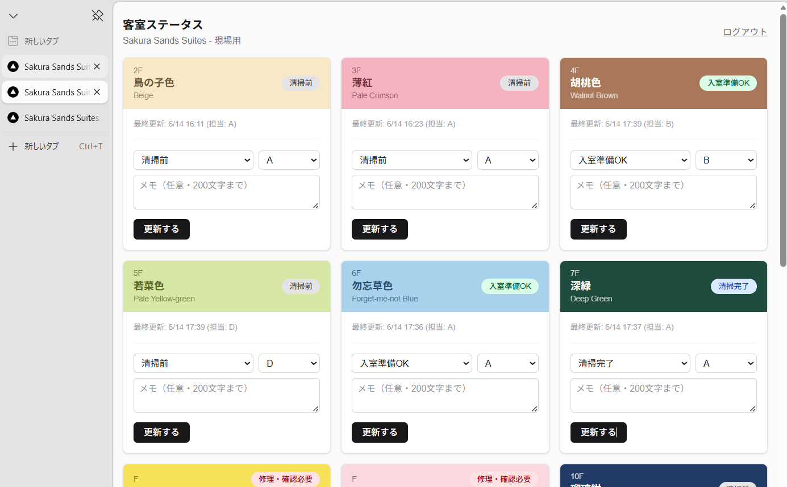
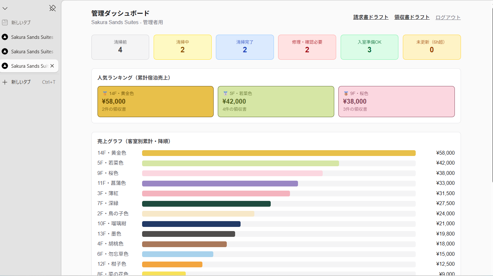
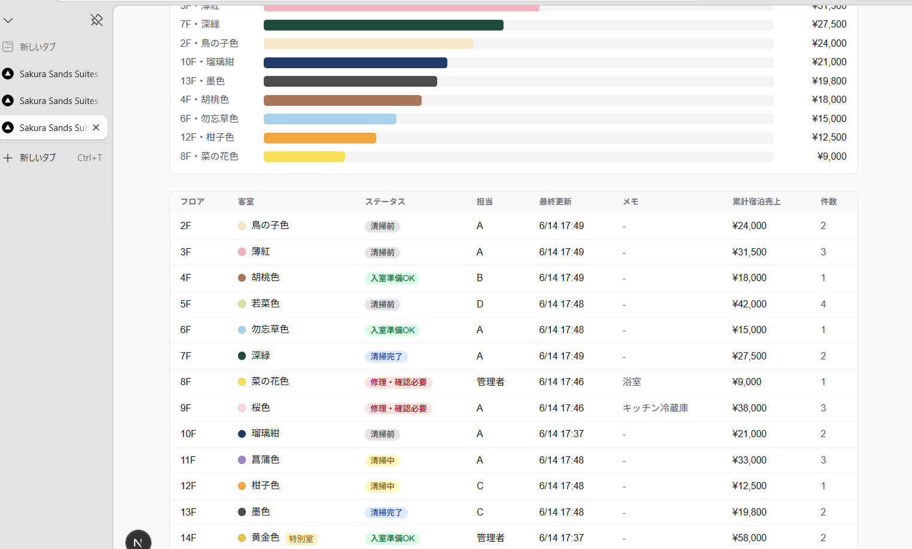
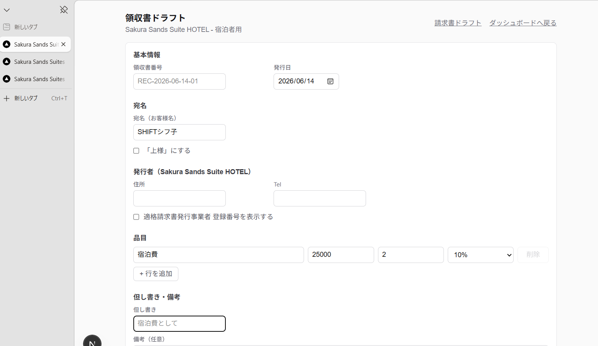
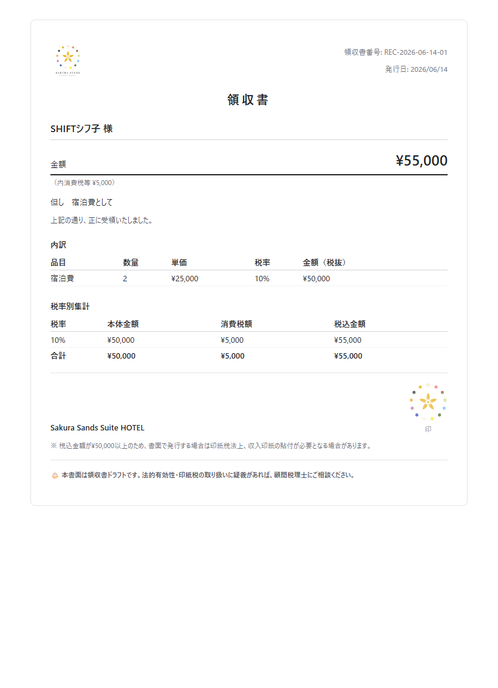

AI業務診断・研修 ご提案
ホテル業務AI化デモ
フロント・清掃・請求書・月次確認をつなぐ簡易サンプル
完成アプリではなく、AIを現場業務に入れるための「見える化デモ」です。
デモ環境（数値はサンプルデータ）
2026年6月14日版
ABOUT THIS DEMO
このデモについて
ホテル業務を題材にしたデモです。フロント、清掃、請求書、売上確認を分けて考えず、現場と管理者が同じ情報を見られる形にしています。
本番導入前に、まず御社の業務でAI化できる作業を洗い出す診断から始められます。
Sakura Sands Suitesのデモは、診断の説明用サンプルです。完成品ではなく「診断の入口」として、次のページから画面構成と操作方法を紹介します。
SYSTEM OVERVIEW
システム構成と画面の使い分け
本システムは3つの画面で構成し、画面ごとに必要な権限を分けています。
| 画面 | URL | 用途 | 必要な権限 |
|---|
| トップページ |
/ |
現場用・管理者用画面への入口（ログインページへのリンクのみ） |
不要（公開） |
| 現場用画面 |
/front |
客室ごとの清掃状況・担当者・メモの更新 |
front または admin |
| 管理者用画面 |
/admin/dashboard ほか |
全体集計・売上ランキング・領収書・請求書の発行 |
admin |
ログイン方式
ユーザー名とパスワードの組み合わせではなく、役割（front／admin）ごとに1つの共有パスコードを入力する方式です。adminのパスコードでログインすると、front画面・admin画面の両方にアクセスできます。front用パスコードでは/front画面のみ利用できます。
ご案内：今回はデモなので共有パスコード方式です。本番では担当者別ログイン、操作履歴、権限分離が必要です。
FRONT SCREEN
現場用画面：客室ステータス管理

/front - 客室ステータス（フロアごとに色分け表示）
- 各フロアのカードでステータス（清掃前／清掃中／清掃完了／入室準備OK／修理・確認必要）を選択し、担当者を記録します。
- メモ欄（200文字まで）に申し送り事項を入力できます。
- 更新後に画面の内容が反映されない場合は、ブラウザの再読み込みを行ってください（キャッシュの影響で表示が遅れる場合があります）。
ADMIN DASHBOARD
管理者用画面：管理ダッシュボード
※デモの数値を入れています。実際の運用画面とは異なります。


- 客室ステータスの件数集計（清掃前／清掃中／清掃完了／修理・確認必要／入室準備OK／未更新）を一覧表示します。
- 累計宿泊売上の上位3室を「人気ランキング」として表示します。
- 客室別の累計売上を降順のグラフで表示し、客室一覧テーブルでメモ・売上・領収書件数を確認できます。
RECEIPT / INVOICE
領収書・請求書の発行と権限

/admin/receipt - 領収書ドラフト
発行できる画面
- /admin/receipt（領収書ドラフト）
- /admin/invoice（請求書ドラフト）
必要な権限
管理者パスコード（admin）でログインした場合のみアクセスできます。現場用パスコード（front）でログインした場合は、これらの画面に入れません。
ランキングへの反映
領収書ドラフトで「客室の累計売上に記録する」を実行すると、ダッシュボードの売上ランキング・グラフに反映されます。
RECEIPT OUTPUT
領収書PDF 出力例（ホテルロゴ入り）
※デモの数値を入れています。
「PDFとして保存（印刷）」を実行すると、ホテルロゴ（上部）とロゴマーク（捺印欄）が入った領収書PDFを出力します。

PDFファイルを開く（receipt-demo.pdf）
ACCESS CONTROL
アクセス権限・公開範囲のまとめ
| 画面・API | 必要な権限 | 備考 |
|---|
| /、/login、/api/login、/api/logout |
不要（公開） |
データを含まないログイン入口 |
| /front、/api/rooms/* |
front または admin |
客室ステータス・メモの更新 |
| /admin/dashboard |
admin |
全体集計・売上ランキング・グラフ |
| /admin/receipt、/admin/invoice |
admin |
領収書・請求書ドラフトの発行 |
| /api/receipts/* |
admin |
領収書データの登録・取得 |
ポイント：adminパスコードはfront画面の操作も含めて全権限を持ちます。front画面の担当者がadmin画面（売上・領収書・請求書）を見ることはできません。
FAQ / BEFORE GOING LIVE
よくある質問と本番での対応
共有パスコード方式について、本番提案では次のような質問を受けます。それぞれに対応方針があります。
| 想定される質問 | 本番での対応 |
|---|
| 誰が変更したか分からないのでは | 担当者別ログインと操作履歴の記録 |
| パスコードが漏れたら | 該当アカウントのみ無効化できる仕組み |
| 退職者が出たら | 該当アカウントの削除・権限剥奪 |
| 売上情報を見られる人をどう管理するか | ロールごとの権限分離 |
今回はデモのため共有パスコード方式です。本番では、質問への対応を含めた権限設計から着手します。
権限設計は、診断のなかで御社の組織体制に合わせて整理します。誰が何を見られるかを最初に決めておくことで、運用開始後の混乱を防げます。
BEFORE GOING LIVE
本番運用（Vercelデプロイ）に向けた注意点
現在のデモ画面のまま公開環境（Vercel）へデプロイすると、以下の3点で問題が発生します。
1デモデータ（room-revenue.jsonなど）はGit管理対象外のため、デプロイ後はランキング・グラフが空の状態で表示されます。
2Vercel本番環境はファイルシステムが読み取り専用です。Redis（Upstash）を設定しない状態では、客室ステータスの更新や領収書の登録が保存できません。
3パスコードは役割ごとに1つの共有パスコードです。「誰が」操作したかの記録は、客室一覧の担当者欄の手入力に依存します。
対応の順序
- Upstash Redis を準備し、環境変数（UPSTASH_REDIS_REST_URL／UPSTASH_REDIS_REST_TOKEN）を設定する
- ADMIN_PASSCODE／FRONT_PASSCODE／AUTH_SECRET を本番用の値に変更する
- 環境変数の設定を確認したうえでデプロイし、デモデータではなく実際の記録から運用を開始する
CHECKLIST
運用上の注意点まとめ
- パスコードは役割ごとの共有情報です。関係者以外に伝わらないよう管理してください。
- 画面の更新内容が反映されない場合は、ブラウザの再読み込みを行ってください。
- 領収書・請求書の発行は、管理者パスコードでログインした担当者のみ実施してください。
- 客室ステータスの更新は現場担当者が/frontで実施し、管理者は/admin/dashboardで全体の状況を確認してください。
- 本番環境への移行前にRedisの設定を完了し、デモデータが表示されないことを確認してください。
WHAT AI CAN DO
AIでできること
デモの裏側では、AIが次のような作業を担えます。AI活用ポイントとして、御社の業務にも当てはめて検討できます。
- メモの要約
- 修理・確認事項の抽出
- 領収書・請求書ドラフトの確認
- 月次レポートの自動要約
- フロント向けFAQの作成
各項目は単独でも導入でき、現場の入力負担を増やさずに情報整理の手間を減らせます。御社の業務に当てはめて、優先順位を一緒に検討します。
WHAT WE OFFER
提供できる支援
- 60分 AI業務診断
- 小規模事業者向けAI研修
- 業務フロー整理
- 簡易デモ作成
- 本番化前の要件整理
診断では、御社の業務を確認し、AI化できる作業の洗い出しと優先順位づけをします。今回のデモのような簡易プロトタイプ作成も含めて、本番化までの進め方を一緒に整理します。